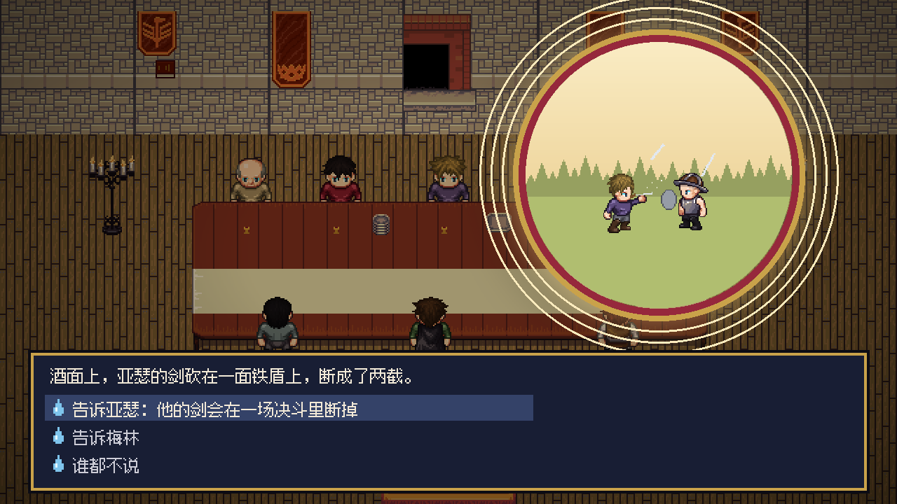
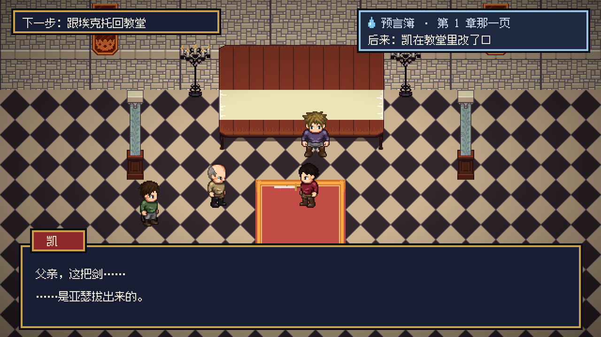

上游：GAME_BRIEF（美术路线：LPC 开源像素素材，2026-11-06 用户确认「先走像素」；成色：可玩原型）· design/CONCEPT.md（招牌画面、最大风险）
参考作品只借构图、材质、色光、信息原则，不复制角色、地图、界面、资产。
定调题（2026-11-06）：用户说「先走像素，继续」，没有逐题选，按推荐项定：视觉基调 = 随章节褪色的像素；最先看清 = 战斗里的敌人意图。想改随时说。
屏幕上人物放大 2 倍：LPC 一帧 64 像素，在 1280×720 的画面里是 128 像素高，大约 6 格宽的视野里站得下三四个人。
| 对象 | 轮廓 / 尺度 | 密度 | 怎么和别的区分 |
|---|---|---|---|
| 玩家（学徒） | 一格人物，外观开场自选 | 屏幕中间，周围留两格空地 | 不戴兜帽；腰上挂一只浅木碗（素材里没有，先不画，见第 6 节） |
| 同伴 | 和玩家同尺寸，跟在身后 | 最多两人跟着 | 固定衣色：凯深红、亚瑟紫（第 2 章起是王）、高文金黄、兰斯洛特银白盔甲、加雷斯土黄、贝狄威尔棕色皮甲；梅林灰兜帽、白发 |
| 路人 | 同尺寸 | 一片地方不超过五六个 | 只穿灰、棕、米这些土色，不用同伴的颜色 |
| 地图上的敌人 | 同尺寸，原地站着 | 一群二到四个，挤在路上 | 脚下暗红色的圈，头顶交叉的两把剑和名字（不只靠颜色） |
| 战斗里的敌人意图 | 每个敌人头顶一块牌 | 牌比血条大，压在所有东西上面 | 招式图标、指向目标的箭头、点数、角上的出手顺序数字（见第 4 节） |
| 能看将来的水面 | 一小片水，一到两格 | 一片地方最多一处 | 金白色的光点慢慢闪，水纹一圈圈扩开；不能看时就是普通的水 |
| 有话要说的人 | 头顶「…」气泡 | — | 气泡是白底黑字，和敌人的双剑标记形状完全不同 |
| 关键选择 | 选项前一个水滴 | 一次三个选项 | 水滴图标 + 确认框；普通选项没有图标 |
| 状态 | 色调 / 光 | 不依赖颜色的提示 |
|---|---|---|
| 第 1 章 庄园 | 冬天的白和蓝，屋里是暖黄的灯 | 雪、炉火 |
| 第 2 章 石中剑 | 伦敦的金和红，加冕的旗子 | 旗帜、人多 |
| 第 3 章 湖中剑与圆桌 | 湖的蓝绿，婚礼的白和金；本章最饱满 | 湖、圆桌 |
| 第 4 章 梅林离开 | 饱和度降 15%，偏冷 | 梅林住过的屋子空了，桌上积灰，白蜡木杖留给了你 |
| 第 5 章 圣杯与裂痕 | 降 30%，偏青灰 | 城里人少一半，空椅子 |
| 第 6 章 最后一战 | 降 50%，傍晚的暗红和灰；卡姆兰最暗 | 营火、旗子破了 |
| 看水面 | 全游戏最亮，金白光，四周压暗 | 圆形画框、杯沿或水边一圈、画面静止不动 |
| 战斗里快倒下的人 | 血条变红 | 血条下面写数字；意图箭头指向他时箭头加粗 |
| 离开、离世的人 | 圆桌上他的椅子变灰 | 空椅子留着他的东西；离世的椅子盖着布 |
| 项 | 做法 |
|---|---|
| 底色 | 深蓝 #181E34，九成不透明 |
| 边框 | 像素描边：外圈 4 像素墨黑，内圈 4 像素金 #C9A24A；直角，不用圆角 |
| 强调色 | 金 #C9A24A（选中、按钮）；水滴蓝 #7EC4EC 只给看水面、预言簿和关键选择 |
| 名字牌 | 说话人名字放在对话框左上一块小牌上，底色用这个人的衣色 |
| 字体 | Fusion Pixel 12 像素简体（OFL），放大到 24 像素用，不开抗锯齿；正文 24，小字 12 |
| 图标 | 像素画，16×16 放大 2 倍；能用图标就不写字（意图、行动、水滴） |
| 动效 | 对话打字机，点一下出全句；提示条从右边滑进来；不做弹跳和缩放 |
没有指定玩法参考（GAME_BRIEF「玩法参考」写的是「不指定」），所以 ui-layout 的「观察原作」这一轮跳过。借的只有信息原则：敌人意图写在头顶（《杀戮尖塔》），选择之后提示「有人记住了」（Telltale《行尸走肉》），用我们自己的样子画。
长桌两头的烛台把大厅烤得发烫，凯在讲比武场上的事，讲到一半自己先笑了。你低头。酒面晃了一下，停住，变成一片金白的光：林子边的空地上，亚瑟的剑砍在一面铁盾上，断成两截，前半截打着转飞出去。你抬头。亚瑟隔着桌子朝你举杯，杯沿上沾着一点酒沫。

教堂的石地凉，凉气透过鞋底往上爬。凯双手平端着那把剑，剑刃上还沾着石屑。他对埃克托开口：「父亲，这把剑……」他看见你站在柱子边上，停住了。烛火在剑身上跳。「……是亚瑟拔出来的。」
由各设计页「需要的素材」和 design/ui/SCREENS.md 汇总。
| 资产 | 必需 / 可降级 | 没有时怎么办 |
|---|---|---|
| 人物行走图：学徒（可换装）、6 个同伴、梅林、埃克托、王后、莫德雷德、摩根、妮妙、佩利诺、路人 | 必需 | LPC 纸娃娃拼；王冠、长裙从 LPC 人物生成器仓库补 |
| 战斗动作：出手、挨打、倒下 | 必需 | LPC 自带 slash / hurt |
| 狼、头狼 | 必需（第 1 章就要） | LPC 四足狼在 OpenGameArt，这里的网络连不上；请用户下载，或第 1 章改成别的野兽 |
| 意图图标、行动图标、水滴、双剑标记、「…」气泡 | 必需 | 自己画 16×16 像素图标 |
| 对话框、名字牌、选项、确认框、提示条 | 必需 | 照第 4 节风格契约用代码画 |
| 地图图块：庄园和雪地、森林、石圈、伦敦、卡美洛城内城外、湖和泉、海边、营地 | 必需 | LPC 图块；雪地要从 LPC 地形里挑或调色 |
| 中文字体 | 必需 | Fusion Pixel 12px（OFL），只截游戏用到的字 |
| 看水面的画面（9 幕） | 必需，可降级 | 先用地图上的人物拼成小画面，放进圆形水面框（目标图一就是这样做的） |
| 预言簿、圆桌面板 | 必需 | 代码画框，人物头像从纸娃娃截 |
| 战斗背景 | 可降级 | 同一章共用一张 |
| 出手特效 | 可降级 | 先用闪白 |
| 浅木碗、白蜡木杖、剑鞘、王者之剑 | 可降级 | 在提示框里写字，不画 |
| 梅林的胡子、王冠 | 可降级 | 先不画，用衣色和兜帽认人 |
| 椅子上留下的东西（钥匙、披风） | 可降级 | 文字 |
design/targets/01_feast_cup.png：庆功宴的酒杯，1280×720，含对话框和三个关键选择。design/targets/02_church_kay.png：教堂里凯改口，1280×720，含「下一步」、预言簿提示条、对话框。tools/make_targets.py（拼图块和人物、按章调色、画界面）。用了哪些素材、许可、来源（进 CREDITS.md）： - LPC 人物图层（身体、头、眼睛、头发、衣服、裤子、鞋、斗篷、兜帽、板甲、头盔、皮甲）和 LPC 室内图块，取自 salt-byte/graveholme 仓库 source/assets，许可 CC-BY-SA 3.0 / GPL 3.0 / OGA-BY 3.0，作者名单在那里的 credits/ 目录。 - Fusion Pixel Font 12px 简体中文，TakWolf，SIL OFL 1.1。
画风：可以，按它批量找素材；再贴近某部参考作品；还是换方向？
界面：照目标图里的样式继续；还是换方向？